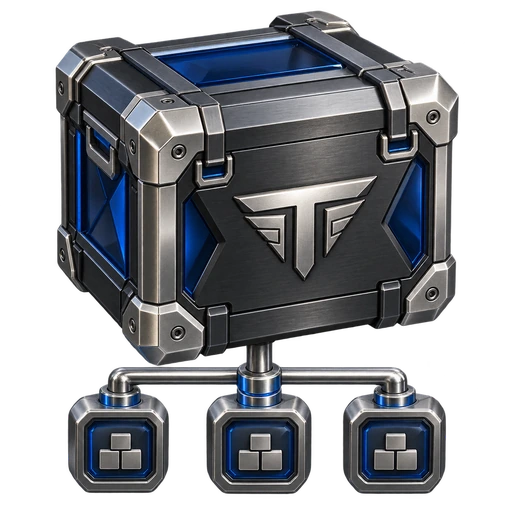
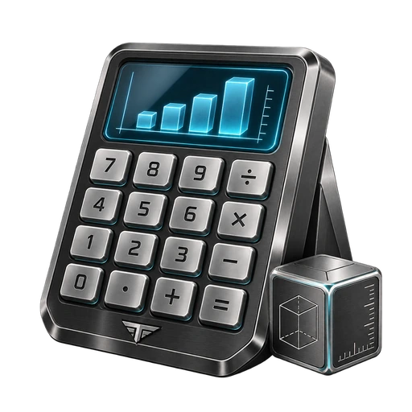
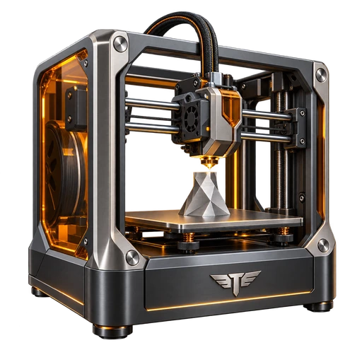

Todas las aplicaciones de Tenkai
Aplicaciones con
propósito.
Encuentra la herramienta por lo que necesitas hacer. Cada ecosistema conserva sus aplicaciones, su información y su recorrido.
Comercio
Tenkai POS y
su operación extendida.
Todas las funciones, aplicaciones conectadas, manuales y descargas del punto de venta están reunidos en su apartado.
Tenkai POS
El centro de tu negocio
Cobra, controla tu mercancía y entiende tus resultados desde un mismo lugar. La operación principal trabaja en tu computadora, incluso cuando no tienes internet.
Explorar POSTenkai Inventory
De la bodega a la tienda
Lleva tu catálogo en el celular. Cuenta y prepara la mercancía en la bodega, aunque no haya señal. Al llegar a la tienda, conecta con POS, revisa el lote y confirma la entrada sin volver a capturar cada artículo.
Explorar InventoryTenkai MultiPos
Más cajas para atender
Agrega una terminal para atender a más clientes. Cada cajero trabaja con su sesión, mientras el POS principal concentra catálogo, cobros, inventario y resultados.
Explorar MultiPosTenkai Resguard
Continuidad preparada
Prepara otro dispositivo con una copia autorizada del catálogo. Durante una contingencia registra ventas y movimientos; cuando vuelva el POS, envía lo pendiente para su revisión y conciliación.
Explorar ResguardTenkai Boss
La vista del dueño
Consulta qué sucursales están conectadas, revisa sus existencias y operaciones y administra productos y precios desde tu celular. Boss trabaja junto con el servicio Sync para llevar tus cambios a las tiendas.
Explorar BossTenkai Sync
Una política de precios
Conecta los POS de tus sucursales con Boss. Distribuye cambios del catálogo y recibe reportes para que el dueño supervise qué información llegó y qué tiendas ya la aplicaron.
Explorar SyncMás formas de trabajar y crear
Tenkai Distribution
Catálogos y herramientas para proveedores.

Tenkai Distribution
Catálogos y operación de proveedores.
Conocer la aplicaciónDistribution Host
Organiza el trabajo compartido del proveedor.
Conocer la aplicaciónDistribution Cliente
Consulta e intercambio de catálogos.
Conocer la aplicaciónDistribution Admin
Administración del ecosistema de distribución.
Conocer la aplicaciónMás formas de trabajar y crear
Almacén y sucursales
Herramientas en desarrollo para organizar el trabajo del almacén.
Más formas de trabajar y crear
Navegación
Una aplicación con su propio espacio.
Más formas de trabajar y crear
Cálculo, producción y multimedia
Herramientas para crear, fabricar y disfrutar.

Calculator 3D
Cálculos para impresión y fabricación.
Conocer la aplicación
Forge Suite
Utilidades para makers y fabricación.
Conocer la aplicaciónTenkai Music
Reproducción y experiencia musical.
Conocer la aplicaciónRace Engineer
Asistencia para tu experiencia de conducción.
Conocer la aplicaciónTu próximo proyecto
¿Qué quieres hacer?
Conoce los ecosistemas o habla con Tenkai sobre la herramienta que necesitas.